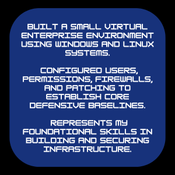
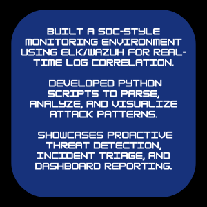
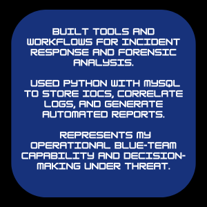
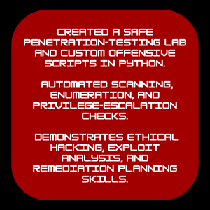

PHASE 1

MARK
BLAZE
.DEV
A natural guardian — driven to learn, build, and protect.
This journey represents my path toward building a future cybersecurity practice dedicated to protecting systems, data, and people.
A 4 year mission to master defense, automation, and ethical hacking through 10,000 hours of focused study and hands-on projects.
ABOUT
ME
I’m Mark, from Ottawa, and I've never stopped exploring.
As a kid, it was remote-controlled cars; now it’s computers, networks, and code.

PROJECTS

SecureLab: Foundations & Hardening
December 2026

BlueWatch: SOC Monitoring & Automation
December 2027

BlueShield: Incident Response & Defensive Operations
December 2028
RedStrike: Ethical Hacking & Offense-Informed Defense
December 2029

TIMELINE
-
Completed January 31, 2026
Arithmetic | Khan Academy
I'm starting with Arithmetic to rebuild my core calculation confidence after years away from formal math. It will give me the precision needed for networking, binary logic, and data analysis. This is the first brick in a long technical foundation.
-
Completed February 28, 2026
Pre-Algebra | Khan Academy
Pre-Algebra will strengthen my logical thinking and problem-solving skills. I chose it to make sure that all later math, especially algebra and statistics, feels natural rather than intimidating. This step helps reconnect my brain to structured, analytical reasoning.
-
Algebra basics | Khan Academy
I completed Algebra Basics to strengthen my analytical reasoning and prepare for scripting, logic, and data analysis. It created the mental foundation I needed for troubleshooting, subnetting, and understanding how systems behave. This skill supports every certification that comes after it.
-
Basic geometry | Khan Academy
I learned geometry to improve my spatial and structural reasoning, which directly supports understanding network diagrams and architecture layouts. Cybersecurity often requires visualizing complex systems, and geometry sharpened that ability. This gave me clearer thinking for infrastructure design.
-
Windows OS | Microsoft
I studied Windows fundamentals because it remains the most widely targeted operating system in enterprise environments. This helped me learn processes, permissions, event logs, and common attack surfaces. Understanding Windows is essential before diving into defensive security.
-
A+ | CompTIA
I pursued A+ to build complete hardware and operating system fundamentals. It taught me how computers work at every layer — from components to processes to troubleshooting. This foundation prepared me for deeper cybersecurity concepts.
-
Network+ | CompTIA
I earned Network+ to understand how data flows through networks, which is the backbone of cybersecurity. It taught me protocols, routing, switching, and overall network behavior. Without this, detecting or defending attacks wouldn’t be possible.
-
Linux LPIC-0 | Linux Professional Institute
I completed Linux Essentials to gain fluency with the terminal, file systems, and core Linux administration. Linux powers most security tools and servers, so this skill is mandatory. This milestone prepared me for higher-level Linux certifications later.
-
Algebra 1 | Khan Academy
I completed Algebra 1 to strengthen the mathematical logic needed for scripting, automation, and future statistical analysis. It gave me precision in problem-solving and deeper confidence in technical thinking. This was the final algebra step before entering more applied math.
-
Core Programming | Python
I learned Python because cybersecurity automation depends on it. Python allowed me to build scripts, analyze logs, interact with APIs, and later create offensive and defensive tools. This milestone opened the door to true hands-on capability.
-
VS Code | Microsoft
I set up VS Code as my main development environment for programming and documentation. It increased my productivity and helped me stay organized as my projects grew larger. Mastering my own workspace was a key part of becoming efficient.
-
Security+ | CompTIA
I earned Security+ to understand the core principles of cybersecurity: encryption, access control, threats, vulnerabilities, and risk management. This was my official entry into the security field. It provided the vocabulary and mental models used throughout the rest of my roadmap.
-
SOC-1 | TryHackMe
I completed SOC Level 1 to gain my first hands-on experience in monitoring alerts and handling basic incidents. This milestone showed me how security teams detect and respond to threats in real time. It was my introduction to blue-team operations.
-
LPIC-1 | Linux Professional Institute
I completed LPIC-1 to deepen my Linux administration skills — permissions, processes, services, and network configuration. Linux mastery is essential for cybersecurity operations. This certification prepared me for advanced server-level security work.
-
CCNA | Cisco
I pursued CCNA to gain real networking competence beyond theory. It taught me practical routing, switching, VLANs, and configuration fundamentals. This milestone gave me the confidence to understand and secure real enterprise networks.
-
Statistics | Khan Academy
I completed Statistics to strengthen my ability to identify anomalies, trends, and patterns in security data. Statistics supports threat hunting, detection engineering, and SOC automation. This final math milestone prepared me for the data-heavy work of Phase 3.
-
Blue Team BLT1 | Security Blue Team
I pursued BTL1 to build structured defensive thinking using real-world scenarios. It reinforced foundational detection skills and helped me understand how attackers behave. This milestone marked the true beginning of my specialized blue-team training.
-
SOC-2 | TryHackMe
I completed SOC Level 2 to work with more realistic attacks, log data, and detection challenges. It sharpened my triage skills and improved my ability to identify suspicious activity. This step helped me think like an analyst.
-
SC-200 | Microsoft
I earned SC-200 to master cloud-based detection using Microsoft Sentinel and modern enterprise tools. This certification helped me understand large-scale visibility and correlation. It strengthened my ability to operate as a modern SOC analyst.
-
LPIC-2 | Linux Professional Institute
I completed LPIC-2 to achieve advanced Linux administration and troubleshooting skills. This milestone allowed me to manage enterprise systems with confidence. It also prepared me for high-level hardening and configuration work.
-
CySA+ | CompTIA
I completed CySA+ to learn behavioral analytics, proactive defense, and deeper vulnerability management. This certification sharpened my ability to detect threats using data science and patterns. It prepared me for more complex security operations.
-
OSDA SOC-200 | OffSec
I pursued OSDA to gain hands-on defensive analyst skills using real-world data and security tools. It helped me understand threat behavior, alert validation, and investigative workflows. This certification strengthened my ability to think like a defender under pressure.
-
MySQL DBA | Oracle
I studied MySQL DBA to manage structured security data, store IOCs, and support automated log analysis. This skill allows me to build more intelligent SOC automation using databases. It also supports my future work in threat intelligence and IR.
-
Blue Team BLT2 | Security Blue Team
I completed BTL2 to refine advanced detection and incident response skills. It pushed me into deeper threat hunting and required strong analytical reasoning. This milestone represents the highest stage of my blue-team specialization.
-
LPIC-3 | Linux Professional Institute
I completed LPIC-3 Security to achieve the highest level of Linux security certification. It taught me enterprise hardening, SELinux, PKI, and multi-service security. This milestone marks a major step in my architecture-level expertise.
-
CCNP Security | Cisco
I pursued CCNP Security to master enterprise-level network defense and architecture. This milestone gave me advanced technical knowledge needed to design secure systems. It prepared me for leadership-level security responsibilities.
-
Offensive & Infrastructure Automation | Python
I pursued advanced Python to build red-team tools, automate enumeration, and strengthen my understanding of attacker methodologies. This milestone sharpened both my offensive and defensive skills. It prepared me for OSCP and the RedStrike project.
-
OSCP+ PEN-200 | OffSec
I completed OSCP+ to master ethical hacking and adversarial problem-solving. It taught me how attackers move, exploit, pivot, and escalate privilege. This milestone completed the offensive side of my cybersecurity foundation.